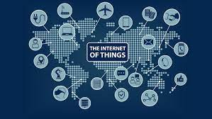
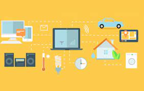
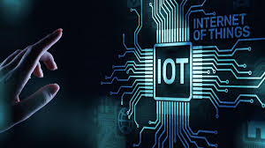

"The Internet Of Things And Security"
The internet of things, or IoT, is
a framework of interrelated computing
gadgets, mechanical and computerized
machines, objects, creatures or individuals
that are given a unique identifiers (UIDs)
and the capacity to exchange data over a
network without requiring human-to-human
or human-to-computer interaction.
"How Does IoT Work?"
An IoT biological system comprises of
web-enabled smart devices that utilize
embedded systems, such as processors,
sensors and communication hardware,
to gather, send and act on information
they secure from their situations.
IoT devices share the sensor information
they collect by interfacing to an IoT gateway
or other edge device where data is either
sent to the cloud to be analyzed or analyzed locally.
Now and then, these devices communicate
with other related devices and act on the
data they get from one another.
The devices do most of the work
without human mediation, in spite
of the fact that individuals can
associated with the devices -- for
occurrence, to set them up, allow
them informational or get to the information.
They can also use AI and machine learning o help make
the data collection easier and more dynamic.
"Examples Of IoT"
Pretty much any physical object can be changed
into an IoT device on the off chance that it can
be associated to the internet to be controlled
or communicate information. A lightbulb that can
be switched on using a smartphone app is an IoT
device, as may be a movement sensor or a keen
indoor regulator in your office or a associated
streetlight.
"The History"
The thought of including sensors and intelligence to essential objects was examined all through the 1980s and 1990s (and there are seemingly a few much prior predecessors), but apart from a few early projects -- counting an internet-connected vending machine -- advance was moderate essentially because the technology wasn't ready. Chips were as well huge and bulky and there was no way for objects to communicate effectively. Processors that were cheap and power-frugal sufficient to be all but disposable were required before it at last got to be cost-effective to connect up billions of devices. The appropriation of RFID labels -- low-power chips that can communicate wirelessly -- solved a few of this issue, in conjunction with the expanding accessibility of broadband internet and cellular and wireless networking. The appropriation of IPv6 -- which, among other things, ought to give sufficient IP addresses for each device the world (or in fact this universe) is ever likely to require -- was moreover a vital step for the IoT to scale.
"Privacy Settings"
Everything that's associated to the internet can be hacked, IoT items are no special case to this unwritten rule.
Insecure IoT frameworks led to toy producer VTech losing recordings and pictures of children utilizing its connected devices.
There's moreover the issue of surveillance. On the off chance that each item gets to be associated at that point there's
the potential for unbridled perception of clients. In the event that a associated cooler tracks food usage and consumption,
takeaways can be focused on hungry individuals who have no food. If a smartwatch can distinguish when you're having sex,
what is to halt individuals with that data utilizing it against the watches' wearer.
“In long-term , insights administrations might utilize the [web of things] for recognizable proof, surveillance,
monitoring, location following, and targeting for recruitment, or to pick up systems or client credentials,”
James Clapper, the US course or national insights said in 2016. Wikileaks afterward claimed the CIA has been creating security misuses for a associated samsung tv.


